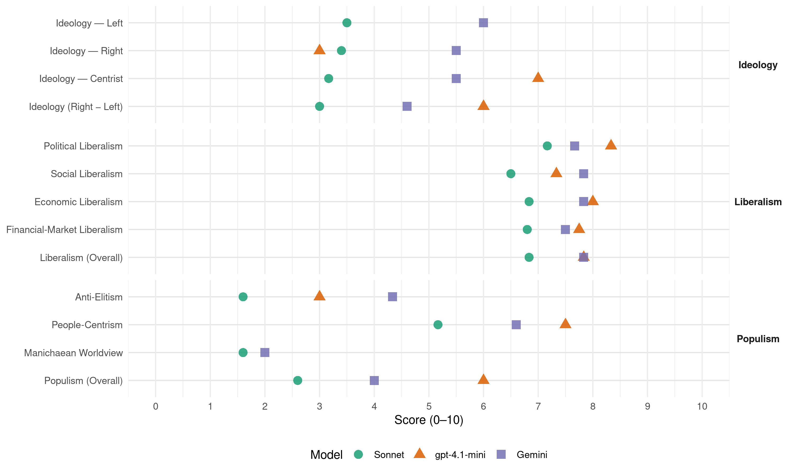

AKP (Turkey, 2007)
manifesto_id 74628_200707
Get full text: This site shows derived annotations and short verbatim quotes only. The full manifesto text is © Manifesto Project / WZB — obtain it via manifesto-project.wzb.eu using the manifesto_id above.
Headline scores
| Dimension | Sonnet | gpt-4.1-mini | Gemini |
|---|---|---|---|
| Populism (Overall) | 2.6 | 6.0 | 4.0 |
| Anti-Elitism | 1.6 | 3.0 | 4.3 |
| People-Centrism | 5.2 | 7.5 | 6.6 |
| Manichaean Worldview | 1.6 | – | 2.0 |
| Ideology (Right − Left) | 3.0 | 6.0 | 4.6 |
| Liberalism (Overall) | 6.8 | 7.8 | 7.8 |
| Political Liberalism | 7.2 | 8.3 | 7.7 |
| Social Liberalism | 6.5 | 7.3 | 7.8 |
| Economic Liberalism | 6.8 | 8.0 | 7.8 |
| Financial-Market Liberalism | 6.8 | 7.8 | 7.5 |
Evidence per dimension
Economic Liberalism
Gemini · score 8.0 · verified · chunk 1
“serbest piyasa ekonomisinin gelişmesine imkan”
üretim ve ticaretten çekilmesi, serbest piyasa ekonomisinin gelişmesine imkan sağlamıştır. Sadece gelecek 5 yılı değil
Gemini · score 8.0 · verified · chunk 2
“kamu bankalarının özelleştirilmesi çalışmalarını tamamlayacağız”
Aracılık maliyetleri üzerindeki vergi yüklerini (BSMV, KKDF) kademeli olarak düşüreceğiz. Başta Halk Bank olmak üzere kamu bankalarının özelleştirilmesi çalışmalarını tamamlayacağız.
Gemini · score 7.0 · verified · chunk 3
“fiyatların serbest piyasada oluşumunu esas alacak”
geliştirilecek lisanslı depoculuk ve ürün borsaları vasıtasıyla fiyatların serbest piyasada oluşumunu esas alacak ve üretimin piyasa koşullarındaki talebe
Gemini · score 8.0 · verified · chunk 4
“fiyatların serbest piyasada oluşumunu esas alacak”
lisanslı depoculuk ve ürün borsaları vasıtasıyla fiyatların serbest piyasada oluşumunu esas alacak ve üretimin piyasa koşullarındaki talebe
Gemini · score 9.0 · verified · chunk 5
“rekabetçi piyasada özel sektör tarafından sunumu”
girdisi olan altyapı hizmetlerinin rekabetçi piyasada özel sektör tarafından sunumu esas alınacaktır.
Gemini · score 7.0 · verified · chunk 6
“dış ticaret hacmimize ekonomik rekabet gücümüzü artıracak”
sivil dış politika araçları ile desteklemeye kararlıyız. Bu çerçevede uluslararası teknik ve insani yardım faaliyetleri ile her coğrafyada ülkemizin mevcudiyetini artırarak göstermeye devam edeceğiz. TlKA, etkin olduğu ülkelerdeki faaliyetlerini daha da yoğunlaştırırken, yeni coğrafyalara planlı bir şekilde açılmaya devam edecektir. Türkiye: Bölgesel Güç, Küresel Aktör Bütün bu vizyon ve yöntem ilkeleri ile uluslararası alanda yeni bir Türkiye imajı oluşturmak amacındayız. Kültürel anlamda doğu ile batı, ekonomik- politik anlamda kuzey ile güney arasında merkez bir rol üstlenmek zorunda olduğumuza inanıyoruz. Ülkemizin küresel konumunu reaksiyoner ve edilgen bir köprü rolü ile değil, aksiyoner ve etken bir merkez ülke ekseninde tanımlıyoruz. Bu tanım konjonktürel ve taktik bir tanımlama değil, derin tarihi birikimimizin ve jeopolitik konumumuzun gerektirdiği kalıcı ve stratejik bir tanımdır. Türkiye tarihi, coğrafi ve kültürel derinliği, ekonomik ve demokratik dinamizmi ile özel bir konuma ve küresel bir misyona sahiptir. AK Parti uluslararası ilişkilerde başarının üç ana şartını olduğuna inanmaktadır: Psikolojik özgüven, stratejik planlama ve güçlü siyasi irade. Önümüzdeki dönemde temel hedefimiz, bu şartları yerine getirerek Türkiye’yi 21. yy.m yükselen gücü yapmaktır. Türkiye’yi içine kapatan değil dünyaya açan, Türkiye’nin stratejik ufkunu daraltan değil sürekli genişleten, Türkiye’nin küresel ve bölgesel etkinliğini zayıflatan değil güçlendiren, Türkiye’yi etkilenen bir çevre ülkesi değil etkileyen bir merkez ülkesi yapan bu yolun takipçisi olacağız. Dış Yardımlar iktidarımız döneminde aktif dış politikamıza paralel olarak dış teknik yardımlara, kalkınma projesi desteklerine ve insani yardımlara yeni bir yaklaşım getirilmiştir. Başta Türk Cumhuriyetleri ve Türk topluluklarının bulunduğu ülkeler olmak üzere Orta Asya, Kafkasya, Balkanlar, Ortadoğu ve Afrika’da daha planlı ve etkili bir yardım politikası izlenmiştir. Daha önce dağınık ve plansız bir şekilde değişik kurumlarımızın yürüttüğü dış yardım çalışmalarında koordinasyon sağlanmıştır. Türkiye’nin yaptığı dış yardımlar sadece miktar olarak arttırılmamış, aynı zamanda bu yardımların kapsamlı bir envanteri çıkarılmıştır. Bu yardımlar uluslararası standartlarda raporlanmaya başlanmıştır. Bu çalışmalarımızın sonucunda Türkiye’nin dış yardımlarının niteliği ve miktarı belirginleşmiş, böylece ülkemiz BM ve OECD tarafından “donör ülke” unvanını almaya hak kazanmıştır. Bu çerçevede Türk işbirliği ve Kalkınma idaresi Başkanlığı (TlKA)‘mn bütçesi ve faaliyet alanı genişletilmiş, kurumun etkinliği arttırılmış, büyük devlet bilinciyle hareket eden Türkiye’nin yardım eli daha geniş bir coğrafyaya ulaşmıştır, iktidara geldiğimizde 12 olan TlKA ülke koordinatörlüğü sayısı 20’ye çıkartılmış, Makedonya, Kosova, Karadağ, Afganistan, Filistin, Etiyopya, Sudan ve Senegal’de yeni temsilcilikler açılmıştır. Türkiye’nin insani ve tarihi sorumluluk duygusunun bir gereği olarak dış yardımlarımız, iktidarımız döneminde büyük oranlarda arttırılmıştır. Pakistan’daki büyük depreme ilk önce Türkiye’nin yardım eli uzanmış, güneydoğu Asya’daki Tstınami felaketinin yaralarının sarılmasında Türkiye büyük katkı sağlamış, Sudan’ın Darftır bölgesindeki açlık ve sefaletle mücadelede ülkemiz etkin rol oynamıştır. Bu çalışmalarda Türk Kızılayı’nın uluslararası etkinliği artırılmıştır. iktidarımız döneminde özellikle Orta Asya, Kafkaslar, Balkanlarda, ayrıca Lübnan ve Filistin’de bulunan tarihi mirasımızın korunması, restorasyonu ve yaşatılması için yoğun çaba gösterilmiştir. Bu eserlerin envanteri çıkarılmış ve önemli pek çok tarihi eserin restorasyonu tamamlanmıştır. AK Parti olarak, yeni dönemimizde de dinamik dış politikamıza paralel olarak dış teknik yardım ve insani yardım politikamızı aynı kararlılıkla sürdüreceğiz. Savunma Atatürk’ün “yurtta sulh, cihanda sulh” ilkesine uygun olarak ve ülkemizin tarihi ve stratejik konumu gereği Türkiye’nin güçlü bir milli savunma sistemine sahip olması temel politikamız olmuştur. Bu anlayışla hem milli savunma sanayimizi güçlendirme çalışmalarına ağırlık verilmiş hem de Türk Silahlı Kuvvetleri’nin her türlü ihtiyacının zamanında karşılanmasına öncelik verilmiştir. Bu dönemde, Türk Silahlı Kuvvetleri’nin modernizasyonu kapsamında birçok yeni proje devreye konulmuştur: ’Modern Tank Geliştirilmesi Projesi’, ‘Taarruz, Taktik/Keşif Helikopteri (ATAK) Projesi’, ‘Milli Savaş Gemisi Projesi’, ‘Jet Eğitim Uçağı’, ‘insansız Hava Aracı’ ve ‘Yeni Nesil Savaş Uçağı (F’35)’ gibi projeler bunların en önemlileri olarak sayılabilir. Savunma sanayimizde yeni projelerle Türk Sanayinin tasarım ve üretim payının artırılmış olması gurur kaynağımızdır, iktidarımız döneminde yapılan çalışmalarla, 2002 yılında % 25 olan Silahlı Kuvvetlerimizin ihtiyaçlarının yurt içinden karşılanma payı bugün % 50’ye yaklaşmıştır. Savunma sanayimizin uluslararası etkinliği de artırılmış, askeri hücumbot ve gemiler, silah, diğer savunma araç-gereçleri ile komuta kontrol ve elektronik harp sistemleri ihracatımız 350 milyon dolara çıkarılmıştır. Türk Silahlı Kuvvetleri’nin ihtiyaçları çerçevesinde yürütülen tedarik ve geliştirme projelerine ilave olarak, yerli savunma sanayimizin geliştirilmesi ve ülkemizin dışa bağımlılığının azaltılmasını sağlayacak araştırma ve geliştirme çalışmalarına büyük ağırlık verilmiştir. Türkiye bu dönemde, güçlü ordusu ve savunma sanayiyle başta NATO, AB ve BM organizasyonları içinde birçok ülkede barışın korunması ve güvenliğin sağlanması misyonu çerçevesinde önemli roller üstlenmiştir. AK Parti’nin milli savunma politikası önümüzdeki dönemde de aynı kararlılıkla sürdürülecek, savunma sanayinin geliştirilmesi ve ar-ge faaliyetleri öncelikli şekilde desteklenecektir. Türkiye’nin gücünü her türlü şart ve coğrafyada hissettirecek, hem konvansiyonel hem de asimetrik muharebeleri icra edebilecek, caydırıcılığı, beka kabiliyeti ve muharebe gücü yüksek bir savunma sistemi ve gücünün oluşturulması ana hedefimiz olacaktır. Dünyadaki teknolojik gelişmeleri sürekli izleyerek, ülkemizin ve Türk Silahlı Kuvvetleri’nin öncelik ve ihtiyaçları doğrultusunda yerli savunma sanayimizi çağdaş yöntemlerle geliştireceğiz. Böylece, ülkemizin dışa bağımlılığının azaltılmasını sağlayacağız. VE YOLA DEVAM ve yola devam evet… TÜRKİYE’Yİ DAHA ETKİN BİR DÜNYA GÜCÜ YAPMAK İÇİN, TÜRK MİLLETİNİ DAHA MÜREFFEH GÜNLERLE BULUŞTURMAK İÇİN, DAHA ÇOK DEMOKRASİ VE DAHA ÇOK ÖZGÜRLÜK DOLU BİR ÜLKE İÇİN, ALIN TERİNİN VE GÖZ NURUNUN HAK ETTİĞİ ÖDÜLE TAMAMEN KAVUŞMASI İÇİN, EKMEĞİ DAHA DA BÜYÜTMEK İÇİN, EKMEĞİMİZİ TAM BİR HAKKANİYETLE BÖLÜŞMEK İÇİN, DAHA ÇOK GÜVEN VE HUZUR İÇİN, YÜREKLERDEN VE SOFRALARDAN HER TÜRLÜ BURUKLUĞU TÜMÜYLE KALDIRMAK İÇİN, ERDEM VE ADALETİ DAHA DA YÜCELTMEK İÇİN, ÇOCUKLARIMIZA DAHA İYİ EĞİTİM VERMEK İÇİN, YAŞLILARIMIZA HAK ETTİKLERİ SAYGIYI DAHA ÇOK SUNMAK İÇİN, KADINLARIMIZI HER TÜRLÜ AYRIMCILIĞA KARŞI TAMAMEN GÜÇLENDİRMEK İÇİN, İSTİKRAR VE GÜVENİN DEVAMI İÇİN, MİLLETİMİZDEN “YETKİ” İSTİYORUZ. BU ÜLKENİN YÜCELMESİNİ EN BÜYÜK ONUR VE ÇOCUKLARINA BIRAKACAKLARI EN BÜYÜK MİRAS KABUL EDEN EVLATLARI OLARAK, AZİZ MİLLETİMİZDEN YENİDEN “YETKİ” İSTİYORUZ. AZİZ MİLLETİMİZİN VİCDANI VE ŞUURU, BİZİM REHBERİMİZDİR. YETKİNİN GERÇEK SAHİBİ SADECE MİLLETTİR. KARAR MİLLETİNDİR! DURMAK YOK YOLA DEVAM
gpt-4.1-mini · score 9.0 · verified · chunk 1
“Sağlıklı ve işleyen bir piyasa ekonomisi, güçlü ve yerleşik bir demokratik temel üzerinde inşa edilebilir. Temel hakların korunuyor olması, temel özgürlüklere saygı duyulması, hukuk devletinin bütün kuralları ve kurumları ile varlığı, sürdürülebilir bir ekonomik kalkınmanın ana dinamiğini oluşturur.”
Sağlıklı ve işleyen bir piyasa ekonomisi, güçlü ve yerleşik bir demokratik temel üzerinde inşa edilebilir. Temel hakların korunuyor olması, temel özgürlüklere saygı duyulması, hukuk devletinin bütün kuralları ve kurumları ile varlığı, sürdürülebilir bir ekonomik kalkınmanın ana dinamiğini oluşturur. Bu gerçeği başından itibaren gören Partimiz, başarıyla uyguladığı ekonomik programını demokratikleşme çabaları ile bütünleştirmiş ve bu iki süreci birbirini tamamlayan bileşenler olarak kabul etmiştir.
gpt-4.1-mini · score 8.0 · verified · chunk 2
“piyasa, rekabet, işletme, vergi, ticaret, düzenleme, özelleştirme”
…piyasa, rekabet, işletme, vergi, ticaret, düzenleme, özelleştirme politikaları ve reformları…
gpt-4.1-mini · score 8.0 · verified · chunk 3
“serbestleştiği dünyada, Türkiye’nin, temel tarım ürünlerinde kendine yeterlik”
Adalet ve Kalkınma Partisinin tarım politikalarındaki temel yaklaşımı; küreselleşen ve ticaretin daha da serbestleştiği dünyada, Türkiye’nin, temel tarım ürünlerinde kendine yeterlik politikası yanında, dünya ile rekabet edebilmek ve dünya piyasalarında liderlik yarışına katılmak olacaktır.
gpt-4.1-mini · score 8.0 · verified · chunk 4
“faizlerde ve vade farklarında keskin düşüşler olmuş, özel sektöre verilen kredi hacmi artmış”
Ayrıca, makro ekonomik dengelerdeki düzelmeye paralel olarak faizlerde ve vade farklarında keskin düşüşler olmuş, özel sektöre verilen kredi hacmi artmış, kurumlar vergisi %33’den %20’ye, gelir vergisi üst dilim vergi oranı %45’den %35’e, işsizlik sigorta primi %7’den %4’e indirilmiştir. Prime esas kazanç alt sınırının asgari ücretle eşitlenmesiyle sanal asgari ücret uygulamasına son verilmiştir. Bu uygulama işveren priminde 7,7 puanlık bir indirime karşılık gelmektedir. Kriz dönemlerinden kalan vergi ve prim borçlarına ödeme kolaylıkları getirilmiştir.
gpt-4.1-mini · score 8.0 · verified · chunk 5
“rekabetçi piyasada özel sektör tarafından sunumu esas alınacaktır”
Mal ve hizmet üretiminin en önemli ön şartı ve girdisi olan altyapı hizmetlerinin rekabetçi piyasada özel sektör tarafından sunumu esas alınacaktır.
gpt-4.1-mini · score 7.0 · verified · chunk 6
“dış ticaret hacmimize ekonomik rekabet gücümüzü artıracak şekilde ivme kazandıracaktır”
Günümüz dünyasında ekonomik ve ticari ilişkilerin siyasi ilişkilerle beraber yürütüldüğü gerçeğinden hareket eden AK Parti, dış ticaret hacmimize ekonomik rekabet gücümüzü artıracak şekilde ivme kazandıracaktır.
Sonnet · score 8.0 · verified · chunk 1
“serbest piyasa ekonomisinin gelişmesine imkan sağlamıştır”
Devletin bir çok sektörde üretim ve ticaretten çekilmesi, serbest piyasa ekonomisinin gelişmesine imkan sağlamıştır.
Sonnet · score 7.0 · verified · chunk 2
“özel sektör öncülüğünde dışa dönük bir yapı”
Sanayi politikamızın temel hedefi, rekabet gücümüzü verimlilik ve teknolojik yenilik ekseninde artırmak, özel sektör öncülüğünde dışa dönük bir yapı içinde sürdürülebilir kalkınmayı sağlamaktır.
Sonnet · score 6.0 · verified · chunk 3
“ranta dayalı ekonomik yapıdan üretime ve istihdama dayalı”
ranta dayalı ekonomik yapıdan üretime ve istihdama dayalı bir ekonomik yapıya geçilmiştir. Paradan para kazanma devri bitmiş, emekle, alın teriyle, bilgi ve beceriyle iş yapmanın esas olduğu bir dönem başlamıştır.
Sonnet · score 7.0 · verified · chunk 4
“dünya ile rekabet edebilmek”
Türkiye’nin, temel tarım ürünlerinde “kendine yeterlik” politikası yanında, “dünya ile rekabet edebilmek” ve dünya piyasalarında “liderlik” yarışına katılmak olacaktır.
Sonnet · score 7.0 · verified · chunk 5
“özel sektörün finansman ve işletmecilik”
Özel kesimin finansman ve işletmecilik anlayışını da devreye sokarak, ulaştırma, haberleşme ve enerji gibi temel konularda daha rekabetçi bir maliyet yapısını sağlayacağız
Sonnet · score 6.0 · verified · chunk 6
“ekonomik rekabet gücümüzü artıracak şekilde”
dış ticaret hacmimize ekonomik rekabet gücümüzü artıracak şekilde ivme kazandıracaktır. 2002’de 36 milyar düzeyinde olan ihracat hacminin
Financial-Market Liberalism
Gemini · score 8.0 · verified · chunk 1
“sermaye girişleri ve çıkışları serbest olmaya”
Enflasyonla mücadele temel önceliğimiz olmaya devam edecek. Serbest kur rejimini sürdüreceğiz. Sermaye girişleri ve çıkışları serbest olmaya devam edecek.
Gemini · score 8.0 · verified · chunk 2
“bankacılık sektörünün daha etkin ve rekabetçi”
yasal düzenlemeye kavuşmuştur. Bankacılık sektörünün daha etkin ve rekabetçi bir yapıda çalışmasını sağlayan önemli reformlardan birisi de
Gemini · score 7.0 · verified · chunk 3
“vadeli işlemler ve opsiyon borsasında vadeli”
ürün borsalarını geliştirerek vadeli işlemler ve opsiyon borsasında vadeli tarım sözleşmelerinin işlem görmesini ve üreticilerin
Gemini · score 7.0 · verified · chunk 4
“özel bankacılık ve finans sistemi de”
borçlanma gereğindeki azalmaya paralel olarak, özel bankacılık ve finans sistemi de küçük girişimcilere daha geniş finansman imkanları
gpt-4.1-mini · score 8.0 · verified · chunk 1
“Bankacılık sistemimiz mali aracılık fonksiyonunu yeniden kazanmıştır. Bankalar, 2002 yılında toplam varlıklarının yüzde 23’ünü kredi olarak verirken bu oran bugün yüzde 44’e çıkmıştır. Diğer taraftan artan kredi hacmine rağmen, bankaların kredileri yönetme kabiliyetleri artmıştır.”
Bankacılık sistemimiz mali aracılık fonksiyonunu yeniden kazanmıştır. Bankalar, 2002 yılında toplam varlıklarının yüzde 23’ünü kredi olarak verirken bu oran bugün yüzde 44’e çıkmıştır. Diğer taraftan artan kredi hacmine rağmen, bankaların kredileri yönetme kabiliyetleri artmıştır. Bunun etkisi “takipteki alacaklar oranı”ndaki düşüşten açıkça görülmektedir.
gpt-4.1-mini · score 8.0 · verified · chunk 2
“finans, banka, sermaye, kredi, yatırım, piyasa, faiz, düzenleme”
…finans, banka, sermaye, kredi, yatırım, piyasa, faiz, düzenleme alanlarında yapılan iyileştirmeler…
gpt-4.1-mini · score 8.0 · verified · chunk 4
“Halk Bankası esnaf ve sanatkar kredileri 2002 yılında 154 milyon YTL iken, yaklaşık 17 kat artarak Mayıs 2007 itibariyle 2,6 milyar YTL’ye yükselmiştir”
Devletin borçlanma gereğindeki azalmaya paralel olarak, özel bankacılık ve finans sistemi de küçük girişimcilere daha geniş finansman imkanları sunmaya başlamıştır. Eskiden ağırlıklı olarak kamu sektörünü finanse eden bankacılık sistemi, sağladığımız yeni ortamda reel sektörün finansmanına yönelmeye başlamıştır. Halk Bankası esnaf ve sanatkar kredileri 2002 yılında 154 milyon YTL iken, yaklaşık 17 kat artarak Mayıs 2007 itibariyle 2,6 milyar YTL’ye yükselmiştir. KOBl kredileri ise 2002 yılında 347 milyon YTL iken 2007 yılında 5 milyar YTL’ye yükselmiştir. 2002 yılında sadece 63 bin işletme bu imkânlardan yararlanmışken, 2007 yılında yaklaşık 500 bin işletme yararlanır hale gelmiştir.
gpt-4.1-mini · score 7.0 · verified · chunk 5
“finansman ve işletme yeteneğinden maksimum derecede yararlanılacaktır”
Rekabetçi piyasanın oluşmadığı sektörler düzenlenerek, özel sektörün finansman ve işletme yeteneğinden maksimum derecede yararlanılacaktır.
Sonnet · score 8.0 · verified · chunk 1
“Sermaye girişleri ve çıkışları serbest olmaya devam edecek”
Serbest kur rejimini sürdüreceğiz. Sermaye girişleri ve çıkışları serbest olmaya devam edecek. Yapısal reformlarımızı kararlılıkla uygulayacağız.
Sonnet · score 7.0 · verified · chunk 2
“bankacılık sektörünü yeniden yapılandırmayı amaçlayan program”
Uygulamaya koyduğumuz ve bankacılık sektörünü yeniden yapılandırmayı amaçlayan program ile sektörün kırılganlığının giderilmesine yönelik önemli gelişmeler sağladık.
Sonnet · score 6.0 · verified · chunk 3
“KOBl’lerin finans piyasalarına erişimi kolaylaştırılmış”
istihdam açısından büyük önem taşıyan KOBl’lerin finans piyasalarına erişimi kolaylaştırılmış, KOBl’lere sağlanan desteklerin miktarı önemli oranda artırılmış ve bu destekler çeşitlendirilmiştir.
Sonnet · score 7.0 · verified · chunk 4
“fiyatların serbest piyasada oluşumunu esas alacak”
Geliştirilecek lisanslı depoculuk ve ürün borsaları vasıtasıyla fiyatların serbest piyasada oluşumunu esas alacak ve üretimin piyasa koşullarındaki talebe göre şekillenmesini sağlayacağız.
Sonnet · score 6.0 · verified · chunk 5
“Telekomünikasyonda tekel kaldırılmıştır”
Telekomünikasyonda tekel kaldırılmıştır. Türk Telekom hisse devri ile birlikte, sektörde tam serbestleşme ve rekabet dönemi başlamış, tüketicilerin, alternatif işletmecilerden hizmet almasının yolu açılmıştır
Political Liberalism
Gemini · score 8.0 · verified · chunk 1
“demokratik, laik ve sosyal hukuk devletinin”
gücünü halktan alan Adalet ve Kalkınma Partisi, demokratik, laik ve sosyal hukuk devletinin teminatıdır. Yeni bir anayasa
Gemini · score 7.0 · verified · chunk 2
“Okul Meclisleri ve Demokrasi Eğitimi”
huzur ve barış içinde yaşama kültürü kazandırmak için, bütün okulları kapsayan “Okul Meclisleri ve Demokrasi Eğitimi” projesi başlatılmıştır.
Gemini · score 7.0 · verified · chunk 3
“Demokratik ve çoğulcu değerleri özümsemiş”
Türkiye’yi küresel bir aktör haline getirecek dinamik gücümüzdür. Demokratik ve çoğulcu değerleri özümsemiş, farklılıkları zenginlik olarak gören ve
Gemini · score 8.0 · verified · chunk 4
“hesap veren şeffaf bir yönetimi sağlamaktır”
kamunun işlemlerini vatandaşların bilgisine ve denetimine daha çok açmak ve hesap veren şeffaf bir yönetimi sağlamaktır. Rekabetin yoğunlaştığı dünyamızda
Gemini · score 8.0 · verified · chunk 5
“demokratik hukuk devleti, makro ekonomik ve”
kararlarını etkileyen faktörlerin başında yerleşik kurumları olan demokratik hukuk devleti, makro ekonomik ve siyasi istikrar gelmektedir.
Gemini · score 8.0 · verified · chunk 6
“DAHA ÇOK DEMOKRASİ VE DAHA ÇOK ÖZGÜRLÜK”
İLLETİNİ DAHA MÜREFFEH GÜNLERLE BULUŞTURMAK İÇİN, DAHA ÇOK DEMOKRASİ VE DAHA ÇOK ÖZGÜRLÜK DOLU BİR ÜLKE İÇİN, ALIN TERİNİN VE GÖZ
gpt-4.1-mini · score 9.0 · verified · chunk 1
“Demokrasi; egemenliğin millete ait olduğu bir siyasi rejimdir. Demokrasilerde nihai karar ve uygulama yetkisi, önceden belirlenmiş hukuk kuralları içinde seçimle oluşturulan organ ve kurumlarındır.”
Demokrasi; egemenliğin millete ait olduğu bir siyasi rejimdir. Demokrasilerde nihai karar ve uygulama yetkisi, önceden belirlenmiş hukuk kuralları içinde seçimle oluşturulan organ ve kurumlarındır. Yetkisini millet iradesinden alan siyasal çoğunluğun hukuka, anayasaya, evrensel hak ve özgürlüklere bağlı kalarak, sorumluluğunu taşıdığı kararları alma yetkisi tartışılamaz.
gpt-4.1-mini · score 8.0 · verified · chunk 2
“demokrasi, haklar, seçimler, mahkemeler, medya, hükümet, parlamento”
…verilen demokrasi, haklar, seçimler, mahkemeler, medya, hükümet, parlamento gibi siyasi kurumlar ve mekanizmalarla ilgili reformlar…
gpt-4.1-mini · score 8.0 · verified · chunk 3
“Milletimizin demokrasi ve güvenlik taleplerini eş zamanlı olarak”
Hedefimiz insanımızın demokrasi ve güvenlik taleplerini eş zamanlı olarak ve birbirini tamamlar bir şekilde karşılamak ana hedefimizdir.
gpt-4.1-mini · score 9.0 · verified · chunk 4
“Bilgi Edinme Kanunu” çıkarılmıştır”
AK Parti, katılımın arttırılmasını hem iyi yönetişim için hem de toplumsal güven ikliminin oluşması için gerekli görmektedir. AK Parti iktidarında katılımın sağlanması amacıyla, merkezi idarede mevzuat hazırlama sürecinde ilgili aktör temsilcilerinin yer alması, yerel yönetimlerde ise kent konseylerinin kurulması öngörülmüştür iyi yönetişimin gerçekleştirilebilmesi için, kamu idarelerinin denetlenebilir ve hesap verebilir bir niteliğe sahip olması gerekmektedir. AK Parti, bütün kurumları etkili bir şekilde denetleyebilmek, başta tepe yöneticiler olmak üzere tüm çalışanlara hesap sorabilmek için stratejik yönetim, performans yönetimi ve denetimi gibi modern yönetim tarzlarını uygulamak için gerekli süreci başlatmıştır. Bu amaçla yapılan düzenlemelerle, ‘iç denetim’ ve ‘Strateji Geliştirme Başkanlıkları’ gibi modern yönetim uygulamalarını zorunlu hale getirmiştir. Böylece, kurumların ve çalışanların önüne amaçlar, hedefler ve performans ölçüleri koyularak kamu yönetiminde denetlenebilirlik artırılmaktadır. Partimiz; Kamu yönetiminin temel amacı olarak, halkın hayatını kolaylaştırmayı, huzur, güvenlik ve refah içinde yaşam kalitesini geliştirmeyi görmektedir. Hukuk devletinin gereği olarak, kamu hizmetinden yararlananlar arasında ayrımcılık yapılamayacağını, kanunlar ve kurallar karşısında herkesin eşit olduğunu kabul eder. Kamu yönetiminin kuruluş ve işleyişinde idarenin bütünlüğü esastır ve dolayısıyla merkezi ve yerel yönetimlerin birbirini tamamlayarak güçleneceğine inanır. Kamu hizmetlerinin halkın ayağına götürülmesi esastır. Mahalli ve müşterek hizmetler, bu hizmetlerden yararlananlara en yakın yerde ve en uygun kuruluşlar eliyle yerine getirilir. Milletimize olan güvenimiz tamdır. Kamu hizmetlerinde ’beyana güven, basitleştirme ve mükerrer bilgi istememe’yi esas kabul eder. Adalet ve Kalkınma Partisi, iyi yönetişim ilkelerini ülkemizde de tam anlamıyla hayata geçirmeyi bu yolla kamu yönetimini etkin ve verimli kılmayı gelecek nesillere karşı ortak sorumluluk olarak görmektedir.
gpt-4.1-mini · score 8.0 · verified · chunk 5
“demokratik hukuk devleti, makro ekonomik ve siyasi istikrar”
Ulusal ve uluslararası yatırımcılar açısından yatırım kararlarını etkileyen faktörlerin başında yerleşik kurumları olan demokratik hukuk devleti, makro ekonomik ve siyasi istikrar gelmektedir. Öngörülebilirliğin sağlandığı bir ortamda, bürokratik işlemlerin ve süreçlerin etkinliği önem arz etmektedir.
gpt-4.1-mini · score 8.0 · verified · chunk 6
“demokratik standartlarını yükselten bir yeniden yapılanma süreci olarak değerlendirmektedir”
AK Parti, AB katılım sürecini hem bir entegrasyon hem de Türkiye’nin siyasal, ekonomik, sosyal ve yasal standartlarını yükselten bir yeniden yapılanma süreci olarak değerlendirmektedir.
Sonnet · score 9.0 · verified · chunk 1
“demokrasinin ve Cumhuriyetimizin güçlendirilmesi”
büyük zorluklarla tesis ettiğimiz güven ve istikrarın korunması, demokrasimizin ve Cumhuriyetimizin güçlendirilmesi için Türkiye sevdasıyla yapacağımız çok işimiz var
Sonnet · score 6.0 · verified · chunk 2
“demokratik değerlerin yaygınlaştırılması”
bilgi ekonomisinin gerektirdiği kaliteli insan gücünün yetiştirilmesi, sosyal yapının güçlendirilmesi, eleştirel düşünce ve demokratik değerlerin yaygınlaştırılması gibi alanlarda toplumsal beklentileri karşılayabilmek
Sonnet · score 6.0 · verified · chunk 3
“Demokratik ve çoğulcu değerleri özümsemiş”
Demokratik ve çoğulcu değerleri özümsemiş, farklılıkları zenginlik olarak gören ve sorumluluk almayı bilen bir gençliğin yetiştirilmesi, partimizin öncelikli hedefleri arasındadır.
Sonnet · score 8.0 · verified · chunk 4
“şeffaflık, katılımcılık, hesap verebilirlik”
Çözüm üretmeye dayalı “iyi yönetişim”in temel kavramları arasında şeffaflık, katılımcılık, hesap verebilirlik, öngörülebilirlik ve kalite yer almaktadır.
Sonnet · score 7.0 · verified · chunk 5
“demokratik hukuk devleti, makro ekonomik”
ulusal ve uluslararası yatırımcılar açısından yatırım kararlarını etkileyen faktörlerin başında yerleşik kurumları olan demokratik hukuk devleti, makro ekonomik ve siyasi istikrar gelmektedir
Sonnet · score 7.0 · verified · chunk 6
“DAHA ÇOK DEMOKRASİ VE DAHA ÇOK ÖZGÜRLÜK”
TÜRK MİLLETİNİ DAHA MÜREFFEH GÜNLERLE BULUŞTURMAK İÇİN, DAHA ÇOK DEMOKRASİ VE DAHA ÇOK ÖZGÜRLÜK DOLU BİR ÜLKE İÇİN
Liberalism (Overall)
Gemini · score 8.0 · verified · chunk 1
“demokratik, laik ve sosyal hukuk devletinin”
gücünü halktan alan Adalet ve Kalkınma Partisi, demokratik, laik ve sosyal hukuk devletinin teminatıdır. Yeni bir anayasa
Gemini · score 8.0 · verified · chunk 2
“bankacılık sektörünün daha etkin ve rekabetçi”
yasal düzenlemeye kavuşmuştur. Bankacılık sektörünün daha etkin ve rekabetçi bir yapıda çalışmasını sağlayan önemli reformlardan birisi de
Gemini · score 7.0 · verified · chunk 3
“fiyatların serbest piyasada oluşumunu esas alacak”
geliştirilecek lisanslı depoculuk ve ürün borsaları vasıtasıyla fiyatların serbest piyasada oluşumunu esas alacak ve üretimin piyasa koşullarındaki talebe
Gemini · score 8.0 · verified · chunk 4
“fiyatların serbest piyasada oluşumunu esas alacak”
lisanslı depoculuk ve ürün borsaları vasıtasıyla fiyatların serbest piyasada oluşumunu esas alacak ve üretimin piyasa koşullarındaki talebe
Gemini · score 8.0 · verified · chunk 5
“rekabetçi piyasada özel sektör tarafından sunumu”
girdisi olan altyapı hizmetlerinin rekabetçi piyasada özel sektör tarafından sunumu esas alınacaktır.
Gemini · score 8.0 · verified · chunk 6
“DAHA ÇOK DEMOKRASİ VE DAHA ÇOK ÖZGÜRLÜK”
İLLETİNİ DAHA MÜREFFEH GÜNLERLE BULUŞTURMAK İÇİN, DAHA ÇOK DEMOKRASİ VE DAHA ÇOK ÖZGÜRLÜK DOLU BİR ÜLKE İÇİN, ALIN TERİNİN VE GÖZ
gpt-4.1-mini · score 8.0 · verified · chunk 1
“Demokrasi; egemenliğin millete ait olduğu bir siyasi rejimdir. Temel hak ve özgürlüklere saygı duyulması, hukuk devletinin bütün kuralları ve kurumları ile varlığı, sürdürülebilir bir ekonomik kalkınmanın ana dinamiğini oluşturur.”
Demokrasi; egemenliğin millete ait olduğu bir siyasi rejimdir. Temel hak ve özgürlüklere saygı duyulması, hukuk devletinin bütün kuralları ve kurumları ile varlığı, sürdürülebilir bir ekonomik kalkınmanın ana dinamiğini oluşturur. Bankacılık sistemimiz mali aracılık fonksiyonunu yeniden kazanmıştır. Bankalar, 2002 yılında toplam varlıklarının yüzde 23’ünü kredi olarak verirken bu oran bugün yüzde 44’e çıkmıştır.
gpt-4.1-mini · score 8.0 · verified · chunk 2
“demokrasi, eşitlik, piyasa, finansal düzenlemeler”
…demokrasi, eşitlik, piyasa, finansal düzenlemeler alanlarında kapsamlı reformlar…
gpt-4.1-mini · score 8.0 · verified · chunk 3
“Milletimizin demokrasi ve güvenlik taleplerini eş zamanlı olarak”
Hedefimiz insanımızın demokrasi ve güvenlik taleplerini eş zamanlı olarak ve birbirini tamamlar bir şekilde karşılamak ana hedefimizdir.
gpt-4.1-mini · score 8.0 · verified · chunk 4
“faizlerde ve vade farklarında keskin düşüşler olmuş, özel sektöre verilen kredi hacmi artmış”
Ayrıca, makro ekonomik dengelerdeki düzelmeye paralel olarak faizlerde ve vade farklarında keskin düşüşler olmuş, özel sektöre verilen kredi hacmi artmış, kurumlar vergisi %33’den %20’ye, gelir vergisi üst dilim vergi oranı %45’den %35’e, işsizlik sigorta primi %7’den %4’e indirilmiştir. Prime esas kazanç alt sınırının asgari ücretle eşitlenmesiyle sanal asgari ücret uygulamasına son verilmiştir. Bu uygulama işveren priminde 7,7 puanlık bir indirime karşılık gelmektedir. Kriz dönemlerinden kalan vergi ve prim borçlarına ödeme kolaylıkları getirilmiştir.
gpt-4.1-mini · score 8.0 · verified · chunk 5
“demokratik hukuk devleti, makro ekonomik ve siyasi istikrar”
Ulusal ve uluslararası yatırımcılar açısından yatırım kararlarını etkileyen faktörlerin başında yerleşik kurumları olan demokratik hukuk devleti, makro ekonomik ve siyasi istikrar gelmektedir. Öngörülebilirliğin sağlandığı bir ortamda, bürokratik işlemlerin ve süreçlerin etkinliği önem arz etmektedir.
gpt-4.1-mini · score 7.0 · verified · chunk 6
“demokratik standartlarını yükselten bir yeniden yapılanma süreci olarak değerlendirmektedir”
AK Parti, AB katılım sürecini hem bir entegrasyon hem de Türkiye’nin siyasal, ekonomik, sosyal ve yasal standartlarını yükselten bir yeniden yapılanma süreci olarak değerlendirmektedir.
Sonnet · score 8.0 · verified · chunk 1
“Sağlıklı ve işleyen bir piyasa ekonomisi”
Sağlıklı ve işleyen bir piyasa ekonomisi, güçlü ve yerleşik bir demokratik temel üzerinde inşa edilebilir. Temel hakların korunuyor olması, temel özgürlüklere saygı duyulması
Sonnet · score 7.0 · verified · chunk 2
“rekabet ortamının gelişmesi”
sektördeki rekabet ortamının gelişmesi, diğer yandan reel kesimin bankacılık sisteminden daha fazla faydalanabilmesi için gerekli her türlü önlemi zamanında ve kararlılıkla almaya devam edecektir.
Sonnet · score 6.0 · verified · chunk 3
“kadına karşı her türlü ayrımcılıkla mücadeleyi”
AK Parti, kadınlara karşı her türlü ayrımcılıkla mücadeleyi, kız çocuklarımızın eğitimini ve toplumun en temel birimi olan aile kurumunu güçlendirmeyi temel öncelikleri arasında görmektedir.
Sonnet · score 7.0 · verified · chunk 4
“şeffaflık, katılımcılık, hesap verebilirlik”
Çözüm üretmeye dayalı “iyi yönetişim”in temel kavramları arasında şeffaflık, katılımcılık, hesap verebilirlik, öngörülebilirlik ve kalite yer almaktadır.
Sonnet · score 6.0 · verified · chunk 5
“rekabetin oluştuğu şeffaf bir serbest piyasa”
AK Parti iktidarının enerji politikalarının temel amacı; rekabetin oluştuğu şeffaf bir serbest piyasa içinde artan nüfusumuzun ve hızla gelişen ekonomimizin enerji ihtiyacının sürekli, kaliteli, güvenli ve uygun maliyetlerle temin edilmesidir
Sonnet · score 7.0 · verified · chunk 6
“DAHA ÇOK DEMOKRASİ VE DAHA ÇOK ÖZGÜRLÜK”
TÜRK MİLLETİNİ DAHA MÜREFFEH GÜNLERLE BULUŞTURMAK İÇİN, DAHA ÇOK DEMOKRASİ VE DAHA ÇOK ÖZGÜRLÜK DOLU BİR ÜLKE İÇİN
Anti-Elitism
Gemini · score 3.0 · verified · chunk 1
“halktan kopuk olarak yürütülen siyaset”
Verimsiz koalisyon yapıları, dar bir çerçevede halktan kopuk olarak yürütülen siyaset ve kısır çekişmeler ile geçen 1990’lı yıllar
Gemini · score 5.0 · verified · chunk 2
“imar Bankası yolsuzluğu açığa çıkarılmış”
iktidarımız döneminde, yıllardır üstüne gidilemeyen imar Bankası yolsuzluğu açığa çıkarılmış ve bankanının kamuya getirdiği yük
Gemini · score 5.0 · verified · chunk 3
“Geçmiş siyaset tarzının kalıntısı olan kısır tartışmalar”
istihdam üzerindeki yükler imkanlar zorlanarak azaltılmıştır. Geçmiş siyaset tarzının kalıntısı olan kısır tartışmalar ve ideolojik yaklaşımlar nedeni ile
gpt-4.1-mini · score 3.0 · verified · chunk 1
“AK Parti,”Amacını yitiren siyaset, istikbalini de yitirir” düşüncesiyle kurulduğu günden itibaren varlık sebebi olan halkın duygu ve değer dünyasına uygun hareket etmiş”
AK Parti “Amacını yitiren siyaset, istikbalini de yitirir” düşüncesiyle kurulduğu günden itibaren varlık sebebi olan halkın duygu ve değer dünyasına uygun hareket etmiş, Türk insanının yaşam şartlarını iyileştirmenin, onur ve saygınlığını pekiştirmenin gayreti içinde olmuştur.
Sonnet · score 2.0 · verified · chunk 1
“yolsuzluk ve yozlaşmadan da”
değerden azade bir siyasetin ulaştığı yolsuzluk ve yozlaşmadan da, bilgiden mahrum siyasetin ulaştığı sığlık ve yetersizlikten de kurtulmanın yolu
Sonnet · score 2.0 · mixed · chunk 2
“yıllardır üstüne gidilemeyen imar Bankası yolsuzluğu”
iktidarımız döneminde, yıllardır üstüne gidilemeyen imar Bankası yolsuzluğu açığa çıkarılmış ve bankanının kamuya getirdiği yük ortaklarından tahsil edilmeye başlanmıştır
Sonnet · score 2.0 · verified · chunk 3
“2002 öncesinin verimsiz koalisyon yapıları ve kötü yönetimin”
Halkımızın ihtiyaçları doğrultusunda… 2002 öncesinin verimsiz koalisyon yapıları ve kötü yönetimin oluşturduğu sosyal çöküntü, hükümetimizin gerçekçi politikaları ile aşılmıştır.
Sonnet · score 1.0 · verified · chunk 4
“yolsuzluğa yol açan bütün kanalları tıkamakta”
Partimiz, yolsuzluğa karşı tavizsiz olduğu gibi yolsuzluğa yol açan bütün kanalları tıkamakta kararlıdır.
Sonnet · score 1.0 · verified · chunk 5
“gereksiz bürokrasiyi azaltmak üzere”
şirket kuruluşuna ilişkin yasal süreçleri rasyonel hale getirmek ve gereksiz bürokrasiyi azaltmak üzere, şirket kuruluş süreçlerinde önemli iyileştirmeler sağlanmıştır
Sonnet · score 2.0 · verified · chunk 6
“reaksiyoner ve edilgen bir köprü rolü”
Ülkemizin küresel konumunu reaksiyoner ve edilgen bir köprü rolü ile değil, aksiyoner ve etken bir merkez ülke ekseninde tanımlıyoruz.
Ideology — Centrist
Gemini · score 5.0 · verified · chunk 1
“toplumsal merkezi temsil eden, Türkiye’yi bir”
Beyannamemiz aynı zamanda toplumsal merkezi temsil eden, Türkiye’yi bir ve bütün olarak kucaklayan siyaset anlayışımızın
Gemini · score 5.0 · verified · chunk 2
“milletin tercihlerini siyasete taşımak temel”
insana ait değerler olan bir siyaset anlayışına sahiptir. Politikalarımızda insanımızın adalet ve kalkınma taleplerine cevap vermek, milletin tercihlerini siyasete taşımak temel ilkemizdir.
Gemini · score 5.0 · verified · chunk 5
“Anadolu insanının sanat ve estetik anlayışının”
kapsamlı kültür politikalarına devam edecektir. Anadolu insanının sanat ve estetik anlayışının en yüksek ifadesi olan el sanatlarımız, aynı
Gemini · score 7.0 · verified · chunk 6
“YETKİNİN GERÇEK SAHİBİ SADECE MİLLETTİR”
İZİN VİCDANI VE ŞUURU, BİZİM REHBERİMİZDİR. YETKİNİN GERÇEK SAHİBİ SADECE MİLLETTİR. KARAR MİLLETİNDİR! DURMAK YOK YOLA DEVAM
gpt-4.1-mini · score 7.0 · verified · chunk 1
“AK Parti, Türkiye’de birlik siyasetinin adıdır. AK Parti, millete hizmetin tek adresidir. AK Parti, cumhuriyetin de, demokrasinin de, laikliğin de teminatıdır.”
Tek millet, tek bayrak, tek vatan, tek devlet anlayışı siyasetimizin özüdür. AK Parti, Türkiye’de birlik siyasetinin adıdır. AK Parti, millete hizmetin tek adresidir. AK Parti, cumhuriyetin de, demokrasinin de, laikliğin de teminatıdır.
gpt-4.1-mini · score 7.0 · verified · chunk 6
“YETKİNİN GERÇEK SAHİBİ SADECE MİLLETTİR. KARAR MİLLETİNDİR!”
AZİZ MİLLETİMİZİN VİCDANI VE ŞUURU, BİZİM REHBERİMİZDİR. YETKİNİN GERÇEK SAHİBİ SADECE MİLLETTİR. KARAR MİLLETİNDİR! DURMAK YOK YOLA DEVAM
Sonnet · score 4.0 · verified · chunk 1
“toplumsal merkezi temsil eden”
Beyannamemiz aynı zamanda toplumsal merkezi temsil eden, Türkiye’yi bir ve bütün olarak kucaklayan siyaset anlayışımızın bir ürünüdür.
Sonnet · score 3.0 · verified · chunk 2
“insanımızın adalet ve kalkınma taleplerine cevap”
Politikalarımızda insanımızın adalet ve kalkınma taleplerine cevap vermek, milletin tercihlerini siyasete taşımak temel ilkemizdir.
Sonnet · score 2.0 · verified · chunk 3
“çalışkan ve üretken halkımızın dinamizmini harekete geçirecektir”
gerçekçi bir içerikle uygulanacak olan istihdam programımız, çalışkan ve üretken halkımızın dinamizmini harekete geçirecektir.
Sonnet · score 4.0 · verified · chunk 4
“vatandaş ile devlet ilişkilerinde güveni esas”
Adalet ve Kalkınma Partisi, vatandaş ile devlet ilişkilerinde güveni esas alır ve bu karşılıklı güven duygusunu beslemeyi kamu yönetiminin asli görevi olarak görür.
Sonnet · score 2.0 · verified · chunk 5
“iktidara gelmeden önce halkımıza vaat”
iktidara gelmeden önce halkımıza vaat ettiğimiz projelerden çok daha fazlasını gerçekleştirdik
Sonnet · score 4.0 · verified · chunk 6
“MİLLETİMİZDEN”YETKİ” İSTİYORUZ”
İSTİKRAR VE GÜVENİN DEVAMI İÇİN, MİLLETİMİZDEN “YETKİ” İSTİYORUZ. BU ÜLKENİN YÜCELMESİNİ EN BÜYÜK ONUR
Ideology — Left
Gemini · score 6.0 · verified · chunk 3
“sosyal yardım ve destekleri vatandaşlarımızın hakkı”
sosyal adaletin gerçekleştirilmesi hedefine öncelik vermektedir. Bu çerçevede bütün sosyal yardım ve destekleri vatandaşlarımızın hakkı ve devletin de görevi olarak kabul
gpt-4.1-mini · score 5.0 · mixed · chunk 1
“Sosyal harcamaların toplam kamu harcamaları içindeki payını artıracağız. Eğitim, sağlık, teknolojik araştırma, ulaştırma, sulama, içme suyu ve e-devlet yatırımlarına öncelik vermeye devam edeceğiz.”
Sosyal harcamaların toplam kamu harcamaları içindeki payını artıracağız. Eğitim, sağlık, teknolojik araştırma, ulaştırma, sulama, içme suyu ve e-devlet yatırımlarına öncelik vermeye devam edeceğiz. Kamu yatırımlarını bölgesel kalkınma ve bölgeler arası gelişmişlik farklarının azaltılmasında etkili bir araç olarak kullanacağız.
Sonnet · score 3.0 · verified · chunk 1
“gelir dağılımında da iyileşmeler olmuştur”
uygulanan ekonomik ve sosyal politikaların etkisiyle gelir dağılımında da iyileşmeler olmuştur. Bu dönemde gelir dağılımındaki eşitsizliği gösteren gini katsayında önemli iyileşmeler sağlanmıştır.
Sonnet · score 4.0 · verified · chunk 2
“sosyal adaleti gerçekleştirmek partimizin”
Ülkemizin imkânlarının ve toplumsal refahın paylaşımında sosyal adaleti gözetmek, sosyal adaleti gerçekleştirmek partimizin ve iktidar anlayışımızın en temel kaygısıdır
Sonnet · score 6.0 · verified · chunk 3
“sosyal adaletin gerçekleştirilmesi hedefine öncelik vermektedir”
Adalet ve Kalkınma Partisi iktidarı devletimizin ‘Sosyal Devlet’ olma ilkesi ve toplumumuzda sosyal adaletin gerçekleştirilmesi hedefine öncelik vermektedir.
Sonnet · score 3.0 · verified · chunk 4
“dar gelirli vatandaşlarımıza konut üretmekle”
Bu çalışmalarla, sadece dar gelirli vatandaşlarımıza konut üretmekle kalınmamış, aynı zamanda tüm sosyal donatıları ile adeta yeni kentler inşa edilmiştir.
Sonnet · score 2.0 · verified · chunk 5
“dar gelirli vatandaşların bilgi ve iletişim”
Evrensel Hizmet Fonu yoluyla… dar gelirli vatandaşların bilgi ve iletişim teknolojilerinden faydalanması sağlanacaktır
Sonnet · score 3.0 · verified · chunk 6
“EKMEĞİMİZİ TAM BİR HAKKANİYETLE BÖLÜŞMEK”
EKMEĞİ DAHA DA BÜYÜTMEK İÇİN, EKMEĞİMİZİ TAM BİR HAKKANİYETLE BÖLÜŞMEK İÇİN, DAHA ÇOK GÜVEN VE HUZUR İÇİN
Ideology (Right − Left)
Gemini · score 5.0 · verified · chunk 1
“AK Parti milletin partisi, milletin iktidarıdır”
AK Parti’nin kumaşını millet dokumuştur. AK Parti milletin partisi, milletin iktidarıdır. Yetkinin gerçek sahibi millettir.
Gemini · score 4.0 · verified · chunk 2
“milletin tercihlerini siyasete taşımak temel”
insana ait değerler olan bir siyaset anlayışına sahiptir. Politikalarımızda insanımızın adalet ve kalkınma taleplerine cevap vermek, milletin tercihlerini siyasete taşımak temel ilkemizdir.
Gemini · score 6.0 · verified · chunk 3
“sosyal yardım ve destekleri vatandaşlarımızın hakkı”
sosyal adaletin gerçekleştirilmesi hedefine öncelik vermektedir. Bu çerçevede bütün sosyal yardım ve destekleri vatandaşlarımızın hakkı ve devletin de görevi olarak kabul
Gemini · score 2.0 · verified · chunk 5
“Anadolu insanının sanat ve estetik anlayışının”
kapsamlı kültür politikalarına devam edecektir. Anadolu insanının sanat ve estetik anlayışının en yüksek ifadesi olan el sanatlarımız, aynı
Gemini · score 6.0 · verified · chunk 6
“YETKİNİN GERÇEK SAHİBİ SADECE MİLLETTİR”
İZİN VİCDANI VE ŞUURU, BİZİM REHBERİMİZDİR. YETKİNİN GERÇEK SAHİBİ SADECE MİLLETTİR. KARAR MİLLETİNDİR! DURMAK YOK YOLA DEVAM
gpt-4.1-mini · score 5.0 · verified · chunk 1
“AK Parti milletin partisi, milletin iktidarıdır. Yetkinin gerçek sahibi millettir. Meşruiyetin gerçek kaynağı millettir.”
AK Parti milletin partisi, milletin iktidarıdır. Yetkinin gerçek sahibi millettir. Meşruiyetin gerçek kaynağı millettir. KARAR MİLLETİNDİR. 22 TEMMUZ DA AZİZ MİLLETİMİZDEN YENİDEN YETKİ İSTİYORUZ.
gpt-4.1-mini · score 7.0 · verified · chunk 6
“YETKİNİN GERÇEK SAHİBİ SADECE MİLLETTİR. KARAR MİLLETİNDİR!”
AZİZ MİLLETİMİZİN VİCDANI VE ŞUURU, BİZİM REHBERİMİZDİR. YETKİNİN GERÇEK SAHİBİ SADECE MİLLETTİR. KARAR MİLLETİNDİR! DURMAK YOK YOLA DEVAM
Sonnet · score 4.0 · verified · chunk 1
“millete ait olanı millete vermek”
Sosyal politikalarının temeline ‘millete ait olanı millete vermek’ prensibini yerleştiren AK Parti, ‘kimsesizlerin kimsesi’ olma anlayışını özümsemiş bir kadrodur.
Sonnet · score 3.0 · verified · chunk 2
“sosyal adaleti gerçekleştirmek partimizin”
sosyal adaleti gözetmek, sosyal adaleti gerçekleştirmek partimizin ve iktidar anlayışımızın en temel kaygısıdır
Sonnet · score 4.0 · verified · chunk 3
“sosyal adaletin gerçekleştirilmesi hedefine öncelik vermektedir”
Adalet ve Kalkınma Partisi iktidarı devletimizin ‘Sosyal Devlet’ olma ilkesi ve toplumumuzda sosyal adaletin gerçekleştirilmesi hedefine öncelik vermektedir.
Sonnet · score 2.0 · verified · chunk 4
“küresel rekabet ortamına hazırlamayı hedeflemektedir”
bu dinamik gücümüzü küresel rekabet ortamına hazırlamayı hedeflemektedir. Profesyonel bir şekilde yönetilen, yatırım kararlarını bilimsel verilere dayanarak alan
Sonnet · score 2.0 · verified · chunk 5
“halkımıza vaat ettiğimiz projelerden”
iktidara gelmeden önce halkımıza vaat ettiğimiz projelerden çok daha fazlasını gerçekleştirdik
Sonnet · score 3.0 · verified · chunk 6
“YETKİNİN GERÇEK SAHİBİ SADECE MİLLETTİR”
AZİZ MİLLETİMİZİN VİCDANI VE ŞUURU, BİZİM REHBERİMİZDİR. YETKİNİN GERÇEK SAHİBİ SADECE MİLLETTİR. KARAR MİLLETİNDİR!
Ideology — Right
Gemini · score 6.0 · verified · chunk 1
“Tek millet, tek bayrak, tek vatan”
tarihi yürüyüşünü sürdürecektir. Tek millet, tek bayrak, tek vatan, tek devlet anlayışı siyasetimizin özüdür.
Gemini · score 5.0 · verified · chunk 3
“milli değerlerine sahip çıkan bir gençlik”
Gençlik Nitelikli, girişimci, özgüveni yüksek ve milli değerlerine sahip çıkan bir gençlik, ülkemizi hak ettiği yere taşıyacak
gpt-4.1-mini · score 3.0 · verified · chunk 1
“Milli güvenliğimizin güçlendirilmesi ve korunması için, iktidarımız ülkemizin bütün imkanlarını seferber etmek konusunda kesin bir kararlılık içerisinde olmuştur.”
Milli güvenliğimizin güçlendirilmesi ve korunması için, iktidarımız ülkemizin bütün imkanlarını seferber etmek konusunda kesin bir kararlılık içerisinde olmuştur. Türkiye’nin, uluslararası hukuk kuralları çerçevesinde milli güvenliğini garanti altına alması, iç ve dış tehditlere karşı güçlü bir güvenlik hattı oluşturması, en doğal hakkıdır.
Sonnet · score 5.0 · verified · chunk 1
“Tek millet, tek bayrak, tek vatan, tek devlet”
Tek millet, tek bayrak, tek vatan, tek devlet anlayışı siyasetimizin özüdür. AK Parti, Türkiye’de birlik siyasetinin adıdır.
Sonnet · score 2.0 · mixed · chunk 2
“Aktif dışa açılma politikasına ağırlık verilecektir”
Dış ticaret, ülkemizin ekonomik gelişimine ve sosyal refahının artırılmasına hizmet vermesi bakımından… Aktif dışa açılma politikasına ağırlık verilecektir.
Sonnet · score 3.0 · verified · chunk 3
“milli değerlerine sahip çıkan bir gençlik”
Nitelikli, girişimci, özgüveni yüksek ve milli değerlerine sahip çıkan bir gençlik, ülkemizi hak ettiği yere taşıyacak temel varlığımızdır.
Sonnet · score 2.0 · verified · chunk 4
“Türk kültür ve sanatının milli kimliğini”
Türk kültür ve sanatının milli kimliğini muhafaza ederek evrensel platformlara taşınması, öncelikli hedeflerimiz arasındadır.
Sonnet · score 3.0 · verified · chunk 5
“milletimizin özgürlük ve güvenliği”
bu vizyonun en temel ilkesi, milletimizin özgürlük ve güvenliği ile devletimizin egemenlik ve bağımsızlığını güçlendirerek geliştirmektir
Sonnet · score 4.0 · verified · chunk 6
“Türk Milletini daha müreffeh günlerle”
TÜRKİYE’Yİ DAHA ETKİN BİR DÜNYA GÜCÜ YAPMAK İÇİN, TÜRK MİLLETİNİ DAHA MÜREFFEH GÜNLERLE BULUŞTURMAK İÇİN
Manichaean Worldview
Gemini · score 2.0 · verified · chunk 1
“yolsuzluk ve yozlaşmadan da, bilgiden mahrum”
değerden azade bir siyasetin ulaştığı yolsuzluk ve yozlaşmadan da, bilgiden mahrum siyasetin ulaştığı sığlık ve yetersizlikten
gpt-4.1-mini · score 4.0 · mixed · chunk 1
“Hiçbir şiddet ve terör odağının nüfuz edemeyeceği en büyük gücün milletimizin birlik ve beraberlik ruhu olduğunu iyi biliyoruz.”
Hiçbir şiddet ve terör odağının nüfuz edemeyeceği en büyük gücün milletimizin birlik ve beraberlik ruhu olduğunu iyi biliyoruz. Türkiye 70 milyon vatandaşıyla birlikte güvenliğine, hudutlarına ve büyük bir mücadeleyle kazanmış olduğu istiklaline ilelebet sahip çıkacaktır.
Sonnet · score 2.0 · verified · chunk 1
“kayıp yılları olmuştur”
kısır çekişmeler ile geçen 1990’lı yıllar, tam anlamıyla ülkemizin ‘kayıp yılları’ olmuştur. 1994, 1999 ve nihayet 2001 krizi ile anılan bu yıllar
Sonnet · score 2.0 · mixed · chunk 2
“verimsiz koalisyon hükümetleri dönemlerinin”
1990’lı yıllardan itibaren verimsiz koalisyon hükümetleri dönemlerinin ve bunun sonucu yaşanan krizlerin derin yaralarını sarmak için seferberlik ilan ettik
Sonnet · score 2.0 · verified · chunk 3
“kötü yönetimin oluşturduğu sosyal çöküntü”
2002 öncesinin verimsiz koalisyon yapıları ve kötü yönetimin oluşturduğu sosyal çöküntü, hükümetimizin gerçekçi politikaları ile aşılmıştır.
Sonnet · score 1.0 · verified · chunk 4
“yolsuzluğa karşı tavizsiz”
Partimiz, yolsuzluğa karşı tavizsiz olduğu gibi yolsuzluğa yol açan bütün kanalları tıkamakta kararlıdır.
Sonnet · score 1.0 · verified · chunk 5
“Çevremiz düşmanlarla çevrili”
“Çevremiz düşmanlarla çevrili” varsayımına dayanan çatışma psikolojisinden hızla çıkarak işbirliği ve diyalog ortamının kurucu aktörü olma misyonunu benimsemek zorundayız
Sonnet · score 2.0 · verified · chunk 6
“ERDEM VE ADALETİ DAHA DA YÜCELTMEK”
DAHA ÇOK GÜVEN VE HUZUR İÇİN, YÜREKLERDEN VE SOFRALARDAN HER TÜRLÜ BURUKLUĞU TÜMÜYLE KALDIRMAK İÇİN, ERDEM VE ADALETİ DAHA DA YÜCELTMEK İÇİN
People-Centrism
Gemini · score 8.0 · verified · chunk 1
“AK Parti milletin partisi, milletin iktidarıdır”
AK Parti’nin kumaşını millet dokumuştur. AK Parti milletin partisi, milletin iktidarıdır. Yetkinin gerçek sahibi millettir.
Gemini · score 6.0 · verified · chunk 2
“milletin tercihlerini siyasete taşımak temel”
insana ait değerler olan bir siyaset anlayışına sahiptir. Politikalarımızda insanımızın adalet ve kalkınma taleplerine cevap vermek, milletin tercihlerini siyasete taşımak temel ilkemizdir.
Gemini · score 6.0 · verified · chunk 3
“temel amaç insanımızın onuru, mutluluğu ve huzuru”
dezavantajlı bütün grupların ihtiyaçlarına karşı duyarlı bir yaklaşım sergilemiştir. Tüm bu çalışmalarımızda temel amaç insanımızın onuru, mutluluğu ve huzuru olmuştur. Değişik bakanlıklarımızca
Gemini · score 5.0 · verified · chunk 5
“Anadolu insanının sanat ve estetik anlayışının”
kapsamlı kültür politikalarına devam edecektir. Anadolu insanının sanat ve estetik anlayışının en yüksek ifadesi olan el sanatlarımız, aynı
Gemini · score 8.0 · verified · chunk 6
“YETKİNİN GERÇEK SAHİBİ SADECE MİLLETTİR”
İZİN VİCDANI VE ŞUURU, BİZİM REHBERİMİZDİR. YETKİNİN GERÇEK SAHİBİ SADECE MİLLETTİR. KARAR MİLLETİNDİR! DURMAK YOK YOLA DEVAM
gpt-4.1-mini · score 8.0 · verified · chunk 1
“AK Parti milletin partisi, milletin iktidarıdır. Yetkinin gerçek sahibi millettir. Meşruiyetin gerçek kaynağı millettir. KARAR MİLLETİNDİR.”
AK Parti milletin partisi, milletin iktidarıdır. Yetkinin gerçek sahibi millettir. Meşruiyetin gerçek kaynağı millettir. KARAR MİLLETİNDİR. 22 TEMMUZ DA AZİZ MİLLETİMİZDEN YENİDEN YETKİ İSTİYORUZ.
gpt-4.1-mini · score 7.0 · verified · chunk 6
“YETKİNİN GERÇEK SAHİBİ SADECE MİLLETTİR. KARAR MİLLETİNDİR!”
AZİZ MİLLETİMİZİN VİCDANI VE ŞUURU, BİZİM REHBERİMİZDİR. YETKİNİN GERÇEK SAHİBİ SADECE MİLLETTİR. KARAR MİLLETİNDİR! DURMAK YOK YOLA DEVAM
Sonnet · score 8.0 · verified · chunk 1
“AK Parti milletin partisi, milletin iktidarıdır”
AK Parti’nin mayasını millet atmıştır. AK Parti’nin hamurunu millet yoğurmuştur. AK Parti milletin partisi, milletin iktidarıdır. Yetkinin gerçek sahibi millettir.
Sonnet · score 4.0 · verified · chunk 2
“milletin tercihlerini siyasete taşımak”
Politikalarımızda insanımızın adalet ve kalkınma taleplerine cevap vermek, milletin tercihlerini siyasete taşımak temel ilkemizdir.
Sonnet · score 6.0 · verified · chunk 3
“insanımızın öncelikleri, kurulduğu günden itibaren Partimizin öncelikleri”
İSTİHDAM bölümünde: insanımızın öncelikleri, kurulduğu günden itibaren Partimizin öncelikleri olmuştur.
Sonnet · score 3.0 · verified · chunk 4
“Devlet, millete hizmet için vardır”
“Devlet, millete hizmet için vardır” ilkesiyle hareket eden partimizin yönetim anlayışı; vatandaşlarını karar alma süreçlerine daha etkin olarak dâhil etmek
Sonnet · score 3.0 · verified · chunk 5
“vatandaşlarımızın kültür ve sanatı”
kadın-erkek, yaşlı-genç, köylü-kentli, kamu çalışanı-özel iş sahibi bütün vatandaşlarımızın kültür ve sanatı bilinçsiz bir şekilde tüketen değil, anlayan, katılan, destekleyen ve üreten aktörler olması
Sonnet · score 7.0 · verified · chunk 6
“YETKİNİN GERÇEK SAHİBİ SADECE MİLLETTİR”
AZİZ MİLLETİMİZİN VİCDANI VE ŞUURU, BİZİM REHBERİMİZDİR. YETKİNİN GERÇEK SAHİBİ SADECE MİLLETTİR. KARAR MİLLETİNDİR!
Populism (Overall)
Gemini · score 4.0 · verified · chunk 1
“AK Parti milletin partisi, milletin iktidarıdır”
AK Parti’nin kumaşını millet dokumuştur. AK Parti milletin partisi, milletin iktidarıdır. Yetkinin gerçek sahibi millettir.
Gemini · score 4.0 · verified · chunk 2
“milletin tercihlerini siyasete taşımak temel”
insana ait değerler olan bir siyaset anlayışına sahiptir. Politikalarımızda insanımızın adalet ve kalkınma taleplerine cevap vermek, milletin tercihlerini siyasete taşımak temel ilkemizdir.
Gemini · score 5.0 · verified · chunk 3
“Geçmiş siyaset tarzının kalıntısı olan kısır tartışmalar”
istihdam üzerindeki yükler imkanlar zorlanarak azaltılmıştır. Geçmiş siyaset tarzının kalıntısı olan kısır tartışmalar ve ideolojik yaklaşımlar nedeni ile
Gemini · score 2.0 · verified · chunk 5
“Anadolu insanının sanat ve estetik anlayışının”
kapsamlı kültür politikalarına devam edecektir. Anadolu insanının sanat ve estetik anlayışının en yüksek ifadesi olan el sanatlarımız, aynı
Gemini · score 5.0 · verified · chunk 6
“YETKİNİN GERÇEK SAHİBİ SADECE MİLLETTİR”
İZİN VİCDANI VE ŞUURU, BİZİM REHBERİMİZDİR. YETKİNİN GERÇEK SAHİBİ SADECE MİLLETTİR. KARAR MİLLETİNDİR! DURMAK YOK YOLA DEVAM
gpt-4.1-mini · score 5.0 · verified · chunk 1
“AK Parti milletin partisi, milletin iktidarıdır. Yetkinin gerçek sahibi millettir. Meşruiyetin gerçek kaynağı millettir.”
AK Parti milletin partisi, milletin iktidarıdır. Yetkinin gerçek sahibi millettir. Meşruiyetin gerçek kaynağı millettir. KARAR MİLLETİNDİR. 22 TEMMUZ DA AZİZ MİLLETİMİZDEN YENİDEN YETKİ İSTİYORUZ.
gpt-4.1-mini · score 7.0 · verified · chunk 6
“YETKİNİN GERÇEK SAHİBİ SADECE MİLLETTİR. KARAR MİLLETİNDİR!”
AZİZ MİLLETİMİZİN VİCDANI VE ŞUURU, BİZİM REHBERİMİZDİR. YETKİNİN GERÇEK SAHİBİ SADECE MİLLETTİR. KARAR MİLLETİNDİR! DURMAK YOK YOLA DEVAM
Sonnet · score 4.0 · verified · chunk 1
“Yetkinin gerçek sahibi millettir”
AK Parti milletin partisi, milletin iktidarıdır. Yetkinin gerçek sahibi millettir. Meşruiyetin gerçek kaynağı millettir. KARAR MİLLETİNDİR.
Sonnet · score 2.0 · mixed · chunk 2
“milletin tercihlerini siyasete taşımak”
Politikalarımızda insanımızın adalet ve kalkınma taleplerine cevap vermek, milletin tercihlerini siyasete taşımak temel ilkemizdir.
Sonnet · score 3.0 · verified · chunk 3
“insanımızın öncelikleri, kurulduğu günden itibaren Partimizin öncelikleri”
İSTİHDAM bölümünde: insanımızın öncelikleri, kurulduğu günden itibaren Partimizin öncelikleri olmuştur.
Sonnet · score 2.0 · verified · chunk 4
“Devlet, millete hizmet için vardır”
“Devlet, millete hizmet için vardır” ilkesiyle hareket eden partimizin yönetim anlayışı; vatandaşlarını karar alma süreçlerine daha etkin olarak dâhil etmek
Sonnet · score 1.0 · verified · chunk 5
“halkımıza vaat ettiğimiz projelerden”
iktidara gelmeden önce halkımıza vaat ettiğimiz projelerden çok daha fazlasını gerçekleştirdik
Sonnet · score 3.0 · verified · chunk 6
“KARAR MİLLETİNDİR”
AZİZ MİLLETİMİZİN VİCDANI VE ŞUURU, BİZİM REHBERİMİZDİR. YETKİNİN GERÇEK SAHİBİ SADECE MİLLETTİR. KARAR MİLLETİNDİR!
Social Liberalism